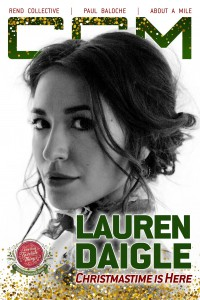

CCM Digital, 15 Nov 2016
| Cover |
|---|
|  |
 Online Exclusively Online Exclusively |
| Writers in this Issue |
| Argyrakis, Andy Conner, Matt Florea, Jesse Sparkman, Kevin |
Lauren Daigle
Cover Feature:- "Christmastime Is Here" by Kevin Sparkman
- "To Finish Well" by staff
- "Trust Turned Up To '11'" by Jesse Florea
- Matt Redman - These Christmas Lights by Matt Conner
- Matthew West - Unto Us: A Christmas Collection by Matt Conner
- NewSong - Rescue: Live Worship by Andy Argyrakis
- Phil Wickham - Children of God: Acoustic Sessions by Matt Conner
- Selah - Rose of Bethlehem: Deluxe Edition by Andy Argyrakis
- Sho Baraka - The Narrative by Matt Conner
- Disciple - Love Live The Rebels by Matt Conner
Relevant Links
For more information about CCM Digital visit .This issue is available exclusively online.
© 2011 CMnexus. Last updated September 2019. Contact: editor -AT- cmnexus -DØT- org About